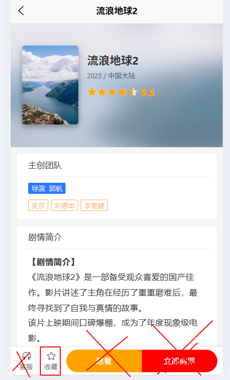

《uni-app 移动应用开发》期末大作业需求文档
1. 项目背景与目标
1.1 项目背景
电影推荐
1.2 考核目标
本项目旨在综合考核学生对本学期 uni-app 课程核心知识点的掌握情况，具体包括：
- 基础能力：熟练搭建 uni-app 项目，掌握 Vue 3 组合式 API (Script Setup) 的使用。
- 组件化开发：能够封装通用组件（如电影卡片），并使用 Props 和 Events 进行通信。
- 网络与数据：掌握网络请求 (
uni.request) 的封装与拦截器 (Interceptor) 的使用，理解前后端分离开发模式。 - 用户体验：能实现下拉刷新、上拉加载更多等移动端常见交互。
- UI 美化：熟练使用
uni-ui组件库快速构建美观的界面。
2. 核心功能需求
学生需完成以下两大核心页面及相关逻辑：
2.1 首页 (Home Page)
- 搜索栏：顶部需包含一个搜索框和公告栏（样式展示即可，推荐使用uni-search-bar、uni-notice-bar）。
- 轮播图 (Banner)：
- 位于顶部，自动轮播展示热门电影海报。（推荐使用swiper）
- 数据来源：调用 Mock 接口
/home/banner。
- 电影列表 (Movie List)：
- 以列表形式展示电影信息。
- 展示内容：需包含电影海报、中文标题、副标题（年份/导演）、评分、标签（如“科幻/灾难”）。（推荐封装通用组件MovieCard.vue）(内部标签推荐uni-card、uni-rate)。
- 数据来源：调用 Mock 接口
/movie/list。

- 交互要求：
- 下拉刷新：下拉页面时，清空当前列表，重新请求第一页数据，并重置加载状态。
- 上拉加载：滑动到底部时，自动加载下一页数据并追加到列表中。如果无更多数据，需显示“没有更多了”的提示。
- 点击跳转：点击任意电影卡片，跳转至详情页，并将电影 ID 作为参数传递。
2.2 详情页 (Detail Page)
- 电影信息头：
- 展示大幅背景图（可做模糊处理）、清晰海报、电影标题、评分、上映年份、国家/地区。
- 数据来源：调用 Mock 接口
/movie/detail，需根据首页传来的 ID 请求对应数据。
- 主创团队：
- 使用标签或列表形式展示导演和主演信息。（推荐用uni-card包括）
- 剧情简介：
- 使用
rich-text组件解析并展示带有 HTML 格式的剧情简介（Mock 数据中包含 HTML 标签）。（推荐用uni-card包括，mock数据会返回的数据中，包含富文本信息summary，推荐 `rich-text` ）
- 使用
- 收藏功能 核心：
- 页面底部或导航栏需包含“收藏”按钮。（推荐uni-goods-nav，官网uni-ui组件教程有）
- 逻辑要求：点击按钮切换收藏状态（已收藏/未收藏），并更新图标或文字。（只需实现这个功能就行，其他三个暂不用实现）
- 数据持久化：必须使用
uni.setStorageSync将收藏列表保存到本地，退出应用后再进入，收藏状态应保持不变。

3. 技术栈要求
- 开发工具：HBuilderX
- 框架：uni-app + Vue 3 (使用
<script setup>语法) - UI 组件库：uni-ui (官方组件库)
- 核心 API：
uni.request(网络请求)uni.addInterceptor核心考点 (用于拦截请求并返回 Mock 数据)uni.navigateTo(页面跳转与传参)uni.showToast/uni.showLoading(交互反馈)uni.setStorageSync/uni.getStorageSync(数据缓存)
- 生命周期：
onLoad,onPullDownRefresh,onReachBottom,onMounted
4. 项目资源包与接口文档
4.1 必装插件：uni-ui
本项目要求使用 uni-ui 进行界面美化。
- 安装方式：打开 HBuilderX -> 顶部菜单“工具” -> “插件安装” -> “uni-ui (官方组件库)” -> 点击安装。
- 使用方式：安装后无需
import，直接在<template>中使用即可，如<uni-card>,<uni-tag>等。
4.2 核心资源：Mock 数据脚本
由于本项目不依赖真实的后端服务器，我们提供了一个 mock.js 文件来模拟后端接口。
- 资源获取：请复制老师提供的
utils/mock.js代码并在项目中新建同名文件。 - 使用方式：
- 在项目根目录下新建
utils文件夹，放入mock.js。 - 在 首页 (
pages/index/index.vue) 中引入并启动拦截器：
- 在项目根目录下新建
import { onLoad } from 'vue';
import { initMock } from '@/utils/mock.js';
// 必须在页面挂载时启动拦截器，否则请求无法被拦截
onLoad(() => {
initMock();
});
点击展开/折叠 utils/mock.js 源代码
// utils/mock.js
const HOST = 'https://api.movie-daily.com';
const DELAY = 600; // 稍微加快一点模拟速度
// 国产热门电影数据池
const MOVIES = [
{ title: "流浪地球2", director: "郭帆", cast: "吴京 / 刘德华 / 李雪健", tags: ["科幻", "灾难"], year: 2023 },
{ title: "哪吒之魔童降世", director: "饺子", cast: "吕艳婷 / 囧森瑟夫", tags: ["动画", "奇幻"], year: 2019 },
{ title: "我不是药神", director: "文牧野", cast: "徐峥 / 王传君", tags: ["剧情", "喜剧"], year: 2018 },
{ title: "让子弹飞", director: "姜文", cast: "姜文 / 葛优 / 周润发", tags: ["剧情", "喜剧"], year: 2010 },
{ title: "战狼2", director: "吴京", cast: "吴京 / 弗兰克·格里罗", tags: ["动作", "战争"], year: 2017 },
{ title: "你好，李焕英", director: "贾玲", cast: "贾玲 / 张小斐", tags: ["喜剧", "亲情"], year: 2021 },
{ title: "长津湖", director: "陈凯歌 / 徐克 / 林超贤", cast: "吴京 / 易烊千玺", tags: ["战争", "历史"], year: 2021 },
{ title: "红海行动", director: "林超贤", cast: "张译 / 黄景瑜", tags: ["动作", "战争"], year: 2018 },
{ title: "夏洛特烦恼", director: "闫非 / 彭大魔", cast: "沈腾 / 马丽", tags: ["喜剧", "爱情"], year: 2015 },
{ title: "西游记之大圣归来", director: "田晓鹏", cast: "张磊 / 林子杰", tags: ["动画", "奇幻"], year: 2015 }
];
// 接口路由表
const API_ROUTES = {
// 1. 首页轮播图 (改为展示热门档期)
[`${HOST}/home/banner`]: () => {
return [
{ id: 101, image: 'https://picsum.photos/800/400?random=101', title: '春节档票房冠军回顾' },
{ id: 102, image: 'https://picsum.photos/800/400?random=102', title: '中国科幻电影的里程碑' },
{ id: 103, image: 'https://picsum.photos/800/400?random=103', title: '必看！豆瓣高分华语片' }
];
},
// 2. 电影列表接口
[`${HOST}/movie/list`]: (options) => {
// console.log(options)
const page = options.data?.page || 1;
const pageSize = 10;
if (page > 3) return []; // 模拟只有3页
return Array.from({ length: pageSize }).map((_, index) => {
const dataIndex = (page - 1) * pageSize + index;
const movie = MOVIES[dataIndex % MOVIES.length];
// 随机评分 8.0 - 9.8
const score = (8.0 + Math.random() * 1.8).toFixed(1);
return {
id: 2000 + dataIndex,
title: movie.title,
// 拼接副标题：年份 / 导演
subTitle: `${movie.year} / ${movie.director}`,
cover: `https://picsum.photos/300/400?random=${dataIndex + 200}`,
rating: Number(score), // 转为数字供 uni-rate 使用
tags: movie.tags,
reviews: Math.floor(Math.random() * 50000 + 1000)
};
});
},
// 3. 电影详情接口
[`${HOST}/movie/detail`]: (options) => {
const id = Number(options.data?.id || 0);
const index = (id - 2000) % MOVIES.length;
const movie = MOVIES[index >= 0 ? index : 0]; // 防止索引越界
return {
id: id,
title: movie.title,
year: movie.year,
country: "中国大陆",
rating: 9.5, // 详情页给个高分
cover: `https://picsum.photos/300/400?random=${id}`,
director: movie.director,
casts: movie.cast,
// 富文本简介
summary: `
<div style="color:#333; line-height:1.8; font-size:15px;">
<p><b>【剧情简介】</b></p>
<p>《${movie.title}》是一部备受观众喜爱的国产佳作。影片讲述了主角在经历了重重磨难后，最终寻找到了自我与真情的故事。</p>
<p>该片上映期间口碑爆棚，成为了年度现象级电影。</p>
<br>
<p><b>【幕后花絮】</b></p>
<p>导演${movie.director.split('/')[0]}在接受采访时表示，这部电影的拍摄过程非常艰辛...</p>
<img src="https://picsum.photos/600/350?random=${id+999}" style="width:100%; border-radius:8px; margin:10px 0;" />
</div>
`
};
}
};
export const initMock = () => {
console.log('Mock: 国产电影数据库已加载...');
uni.addInterceptor('request', {
invoke(args) {
const handler = API_ROUTES[args.url];
if (handler) {
setTimeout(() => {
const res = {
data: { code: 200, msg: 'success', data: handler(args) },
statusCode: 200
};
args.success && args.success(res);
args.complete && args.complete(res);
}, DELAY);
return false;
}
return args;
}
});
};
4.3 Mock 接口文档
基础域名 (Base URL): https://api.movie-daily.com
以下接口均通过 uni.request 调用，请求不会真的发往互联网，而是直接返回模拟数据。
接口 1：获取首页轮播图
- 地址:
/home/banner - 方式:
GET - 描述: 获取首页顶部的热门电影宣传图。
接口 2：获取电影列表 (分页)
- 地址:
/movie/list - 方式:
GET - 参数:
参数名 类型 必填 说明 page Number 否 页码，默认 1。Mock 数据预设了 3 页数据。
返回示例:
{
"code": 200,
"data": [
{
"id": 2001,
"title": "流浪地球2",
"subTitle": "2023 / 郭帆",
"cover": "http://...",
"rating": 8.5,
"tags": ["科幻", "灾难"]
},
...
]
}接口 3：获取电影详情
- 地址:
/movie/detail - 方式:
GET - 参数:
参数名 类型 必填 说明 id Number 是 电影 ID (从列表页获取)
5. 评分标准
| 维度 | 分值 | 评分点说明 |
|---|---|---|
| 基础功能 | 60分 |
1. 项目能正常运行，无报错 (20分) 2. 首页轮播图和列表能展示 Mock 数据 (20分) 3. 点击列表能跳转到详情页，且内容显示正确 (ID传参正确) (20分) |
| 交互逻辑 | 20分 |
1. 下拉刷新逻辑正确 (数据重置) (10分) 2. 上拉加载逻辑正确 (分页追加，无数据提示) (10分) |
| 界面美观 | 10分 |
1. 使用了 uni-ui 组件 (如 uni-card, uni-tag 等) (5分)2. 页面布局整洁，图片无变形，文字排版清晰 (5分) |
| 进阶加分 | 10分 |
1. 收藏功能：实现了收藏状态的本地持久化存储 (5分) 2. 代码规范：代码结构清晰，关键逻辑有注释，组件封装合理 (5分) |
6. 提交方式
- 提交内容：
- 完整的项目源码文件夹（请删除 unpackage 目录以减小体积）。
- 一份简短的
.txt说明文档，注明姓名、学号以及已完成的功能点。
- 提交截止时间：[请填写日期]
- 提交渠道：[请填写提交方式，如学习通/邮箱]